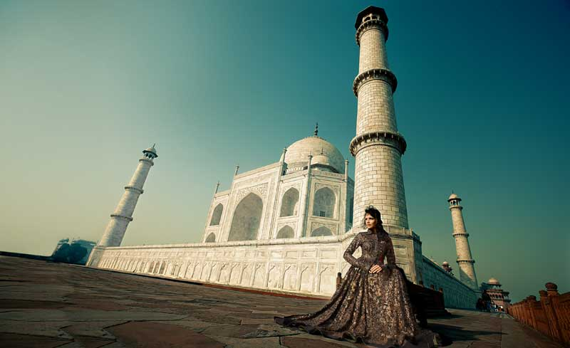
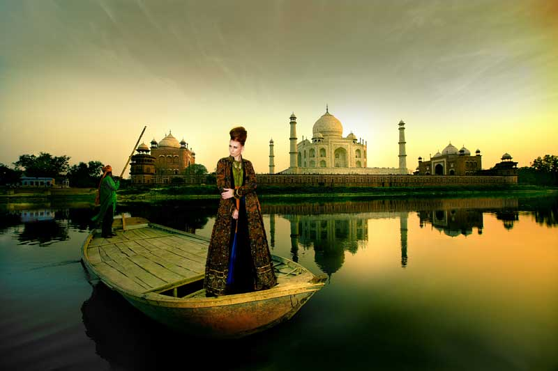

PLACES OF INTEREST (AGRA) :
TAJ MAHAL
WAS BUILT BY AN ARTICIAN EMPEROR SHAHJAHAN IN THE MEMORY OF HIS BELOVED WIFE MUMTAJ MAHAL.IT IS OLACE OF INTEREST FOR ITS ZAME FORM OF THE FOUR MEHRAB.IT IS ONE OF THE SEVEN WONDERS OF WORLD.

